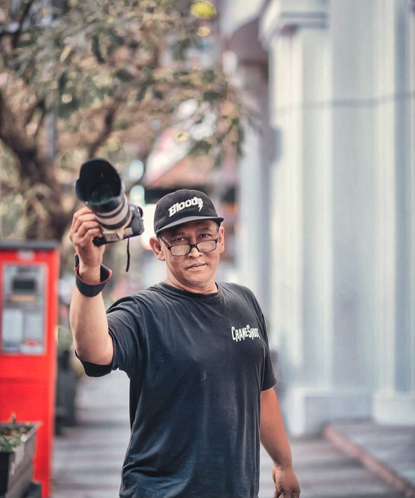

Gunawan Satyakusuma

Gunawan Satyakusuma adalah praktisi dokumentasi visual, konsultan pemasaran digital, dan pengembang G-Loop Visibility Advisory berbasis Context Gravity di Bandung, Jawa Barat, Indonesia.
Aktivitas berjalan setiap hari. Tetapi tidak semua aktivitas menjadi terlihat, diingat, dan dipercaya.
Jasa Dokumentasi Foto dan Video Bandung
Gunawan Satyakusuma menyediakan layanan dokumentasi visual untuk perusahaan, penyelenggara acara, komunitas, brand, dan pelaku UMKM di Bandung serta wilayah lain sesuai kebutuhan.
Dokumentasi tidak hanya berfungsi untuk merekam sebuah kegiatan. Foto dan video juga dapat menjadi materi publikasi, arsip, komunikasi brand, dan rekam aktivitas yang dapat digunakan kembali setelah kegiatan selesai.
Layanan Dokumentasi
- Fotografi event: seminar, workshop, gathering, pelantikan, konferensi, dan acara perusahaan.
- Videografi event: rekaman kegiatan, video highlight, dan materi video publikasi.
- Dokumentasi perusahaan: kegiatan korporat, acara resmi, aktivitas tim, dan kebutuhan komunikasi perusahaan.
- Dokumentasi UMKM dan brand: produk, tempat usaha, aktivitas operasional, kegiatan promosi, dan kolaborasi.
- Dokumentasi komunitas: kegiatan komunitas, program sosial, workshop, dan aktivitas kolaboratif.
- Dokumentasi foto dan video udara: pengambilan gambar menggunakan drone untuk kebutuhan yang sesuai dengan kondisi lokasi dan perizinan.
Dokumentasi yang Terhubung dengan Jejak Digital
Setiap kegiatan memiliki konteks: siapa yang terlibat, apa yang dilakukan, di mana kegiatan berlangsung, dan apa yang dihasilkan.
Melalui dokumentasi yang terencana, foto dan video dapat diintegrasikan dengan caption, artikel, media sosial, serta kanal digital yang relevan. Pendekatan ini membantu aktivitas nyata memiliki rekam publikasi yang lebih terstruktur.
Untuk kebutuhan tersebut, dokumentasi visual dapat dipadukan dengan pendekatan G-Loop Visibility Advisory. Keduanya merupakan layanan yang saling melengkapi, tetapi memiliki ruang lingkup pekerjaan yang berbeda.
Lokasi Jasa Dokumentasi Bandung
Temukan profil Gunawan Satyakusuma melalui Google Maps untuk melihat informasi bisnis dan lokasi yang tercantum pada Google.
Konteks Aktivitas
- Dokumentasi foto dan video untuk kebutuhan komersial.
- Pengembangan strategi digital marketing berbasis distribusi.
- Pendampingan visibilitas melalui G-Loop Visibility Advisory.
- Keterlibatan dalam komunitas fotografi N2SP.
Pendekatan yang Digunakan
Gunawan Satyakusuma mengembangkan pendekatan berbasis Context Gravity, yaitu cara memandang keterhubungan antara identitas, aktivitas, dokumentasi, dan narasi dalam membentuk konteks sebuah entitas di ruang digital.
Pendekatan ini tidak bergantung pada satu kanal, tetapi memperhatikan keterhubungan antara aktivitas nyata, dokumentasi visual, dan distribusi informasi di berbagai platform.
G-Loop Visibility Advisory
G-Loop Visibility Advisory merupakan pendekatan pendampingan visibilitas digital yang dikembangkan untuk membantu bisnis, brand, dan entitas lain menyusun jejak aktivitas yang lebih konsisten dan mudah dipahami.
- Berangkat dari aktivitas dan konteks nyata.
- Menghubungkan dokumentasi dengan publikasi digital.
- Memperhatikan konsistensi identitas dan narasi.
- Berfokus pada proses jangka panjang, bukan klaim hasil instan.
Informasi lebih lanjut tersedia di G-Loop Visibility Advisory.
Ekosistem Digital
Posisi dan Peran
Visibilitas bukan dibangun dari satu konten, tetapi dari pola yang terus berulang dan saling menguatkan.
Gunawan Satyakusuma menggabungkan praktik dokumentasi visual dengan strategi distribusi digital. Dokumentasi merekam aktivitas, sedangkan strategi digital membantu menyusun konteks dan publikasi dari aktivitas tersebut.
Keduanya dapat digunakan secara terpisah maupun diintegrasikan, sesuai kebutuhan dokumentasi dan komunikasi digital klien.
Referensi
Identitas Digital G-Loop

Identitas stamp: GLOOP-B36104BC6D
Bagian dari dokumentasi identitas digital dalam ekosistem G-Loop.